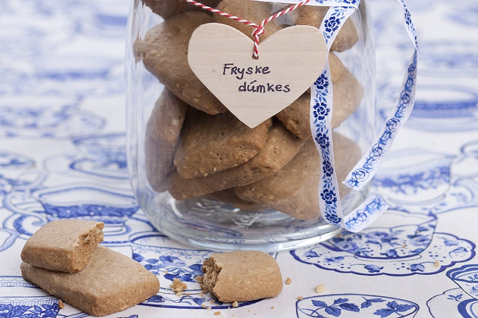

Sûkerbôle

Little biscuits made with ginger, almonds and anise.
These biscuits which translate to little thumbs are one of the best known treats from Fryslan. Great with your coffee or afternoon tea.
Ingredients
Dough
- 150g butter (at room temperature)
- 150g soft brown sugar
- 2 eggs
- 250g flour
- 1 teaspoon salt
- 80g finely ground almonds
- 1 teaspoon ground anise seeds
- 1 teaspoon ginger powder
- 1 teaspoon cinnamon
Steps
- Stir the butter softly in a bowl.
- Add the sugar and the eggs and mix till foamy.
- Sieve the flour together with the salt above the bowl and kneed to form a dough.
- Hydrate the anise seeds in a table spoon of warm water
- Add the other ingredients and kneed well
- Wrap the dough in cling film and leave to rest in the fridge for 30 minutes
- Roll the dough on a flowered worktop to a thickness of 1cm.
- Cut out biscuits of 2x4cm and transfer to a baking tray.
- Bake the biscuits for 25 minutes in a preheated oven.